Cómo crear tu cuenta, reservar y pagar tus citas, reservar varias de una vez, cambiar o anular una cita, descargar tus tickets y ajustar tu perfil, paso a paso.
ParaClientes de la peluquería
Funciona enNavegador, móvil (Android e iOS) y ordenador (Mac y Windows)
Con la aplicación de Peluquería Armando puedes pedir cita a cualquier hora, sin llamar, y tenerlo todo controlado: tus próximas citas, lo que has pagado y tus tickets.
Qué puedes hacer
Reservar una cita eligiendo el servicio, el día y la hora que te vengan bien, hasta con un año de antelación.
Reservar varias citas de una vez si vienes con regularidad (por ejemplo, cada 15 días durante todo el año).
Pagar online con PayPal al reservar o pagar en la peluquería el día de la cita.
Cambiar la hora o anular tus citas desde la app, hasta 1 hora antes.
Recuperar el dinero automáticamente si anulas una cita pagada online.
Ver y descargar tus tickets de compra en PDF.
Elegir el aspecto de la app: fondo blanco o negro.
Dónde se usa
La aplicación es la misma en todas partes: en la web desde cualquier navegador, en la app del móvil (Android e iOS) y en la app de escritorio (Mac y Windows). Tu cuenta y tus citas son las mismas en todos ellos.
Cómo leer este manual
Los pasos numerados (1, 2, 3…) se hacen en orden.
Los botones aparecen así: Reservar, Cambiar hora, Reembolsar, Cancelar.
Los recuadros te avisan de cosas útiles:
Consejo. Trucos para ir más rápido.
Información. Cómo funciona algo por dentro.
Importante. Normas que conviene conocer, como los plazos para anular.
Las capturas de este manual usan datos de ejemplo. Las fechas, nombres e importes que veas en tu app serán los tuyos.
02Tu cuenta
Para reservar necesitas una cuenta. Crearla es gratis y lleva menos de un minuto.
Crear una cuenta
En la parte superior de la página, pulsa Entrar y después Regístrate. Si pulsas Reservar sin haber entrado, la app te lleva a la pantalla de entrar, donde también tienes el enlace Regístrate; al terminar, vuelves directamente a la reserva.
Foto de perfil (opcional). Pulsa Añadir foto de perfil y elige una imagen JPG, PNG o WebP. En el móvil puedes hacerte una foto en ese momento. La app la recorta en cuadrado automáticamente; si no pones ninguna, se muestran tus iniciales.
Escribe tu nombre y apellidos, tu email y tu teléfono. El teléfono es el que usará la peluquería para escribirte por WhatsApp si hace falta.
Elige una contraseña de al menos 8 caracteres.
Deja marcada la casilla Quiero recibir avisos y novedades por email si quieres enterarte de cierres por vacaciones, cambios de horario o promociones. Puedes cambiarlo cuando quieras en tu perfil.
Pulsa Crear cuenta. Entrarás directamente en la pantalla de reservar, lista para pedir tu primera cita.
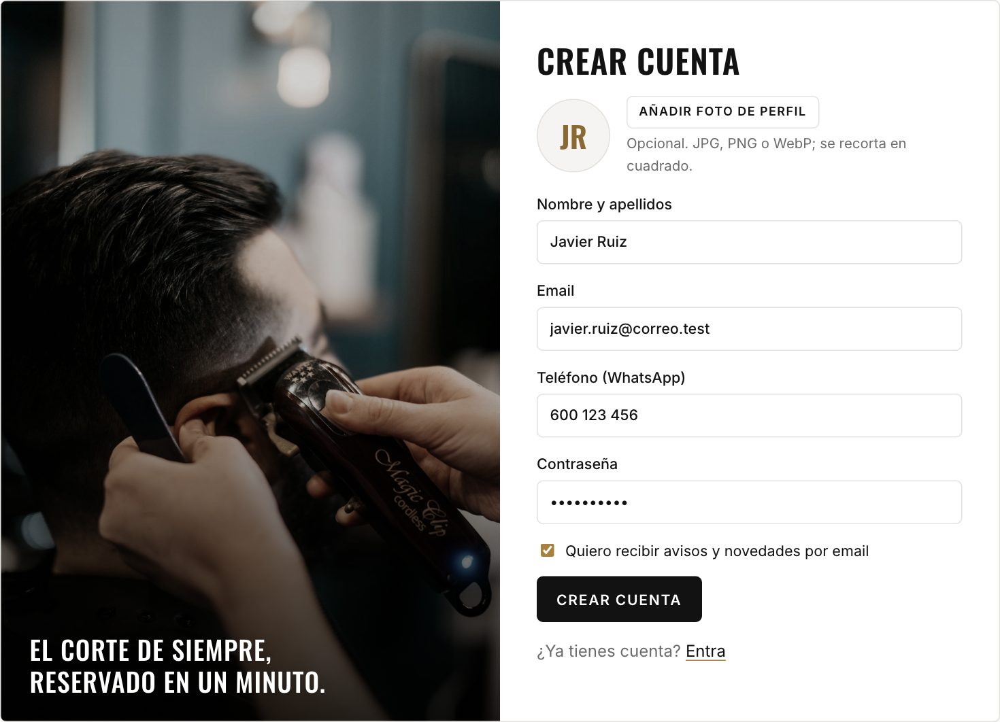
Figura 2.1 · Formulario para crear una cuenta
Entrar
Pulsa Entrar en la parte superior.
Escribe tu email y tu contraseña y pulsa Entrar. Irás a Mis citas (o a la reserva, si venías de pulsar Reservar).
La app recuerda tu sesión en ese dispositivo, así que la próxima vez entrarás directamente.
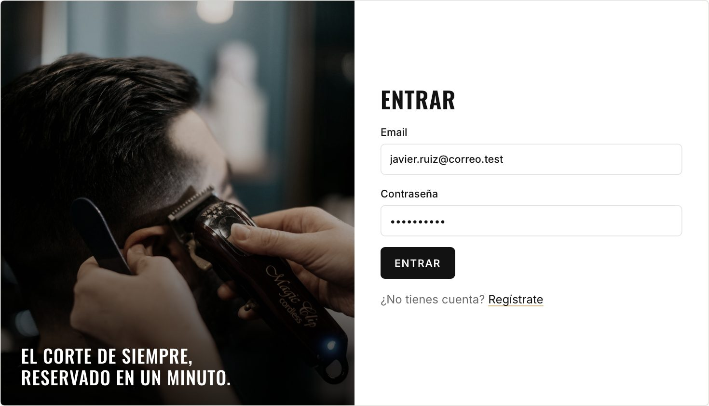
Figura 2.2 · Pantalla para entrar
¿Has olvidado la contraseña? Llama o escribe a la peluquería: te pondrán una contraseña nueva y luego podrás cambiarla en Mi perfil.
Cuenta bloqueada. Si al entrar ves un mensaje de cuenta bloqueada (por ejemplo, tras varias ausencias sin avisar), no podrás reservar hasta la fecha indicada. Para cualquier duda, habla con la peluquería.
Salir
Pulsa Salir en la parte superior (en el móvil, dentro del menú ☰). Hazlo siempre si usas un ordenador compartido.
03La página de inicio
Es lo primero que ves al abrir la app. Desde aquí puedes reservar, consultar los servicios con sus precios y ver el horario.
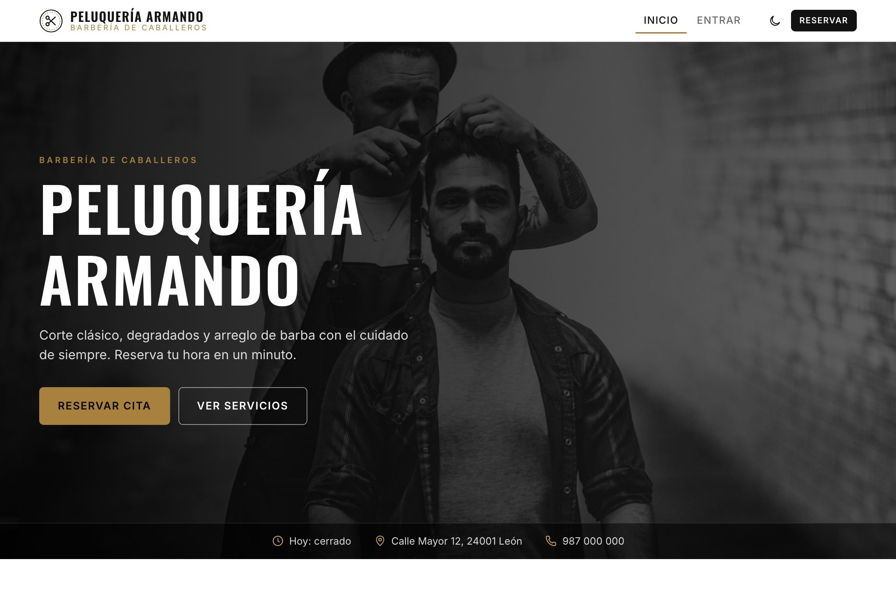
Figura 3.1 · Página de inicio. Abajo, el horario de hoy, la dirección y el teléfono
Arriba a la derecha tienes siempre el botón Reservar, el acceso a Mis citas, tu nombre (que abre tu perfil) y el botón ☾ / ☀ para cambiar entre fondo blanco y negro.
Cuando has entrado con tu cuenta, verás tu nombre arriba a la derecha y el enlace Mis citas.
Servicios y precios
Baja por la página o pulsa Ver servicios para ver la carta con todos los servicios y su precio. El precio es el mismo que pagarás online o en la peluquería.
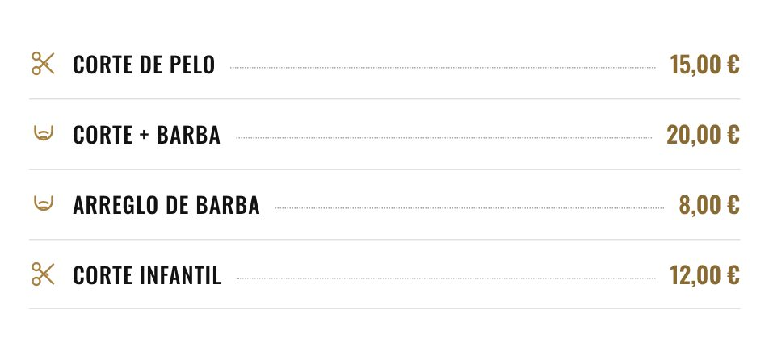
Figura 3.2 · Carta de servicios
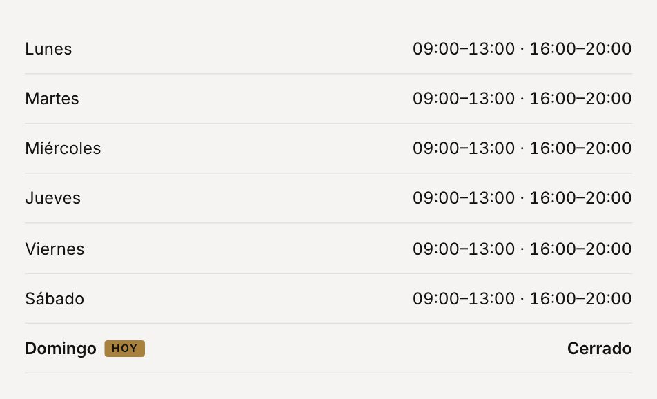
Figura 3.3 · Horario semanal
Horario
El apartado Cuándo venir muestra el horario de cada día de la semana. Si la peluquería cierra un día concreto (festivo, vacaciones), ese día no aparecerán horas libres al reservar.
04Reservar una cita
La reserva se hace en una sola pantalla de cuatro pasos. Cada paso aparece cuando completas el anterior.
Pulsa Reservar (arriba a la derecha), Reservar cita en la portada o Nueva cita en Mis citas.
Paso 1 · Elige el servicio
Pulsa el servicio que quieres. Se marca con un borde dorado y se muestra su precio.
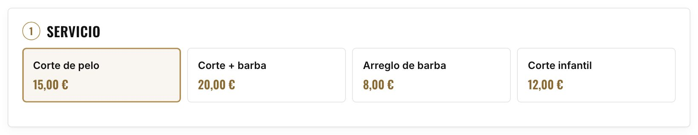
Figura 4.1 · Paso 1: servicio
Paso 2 · Elige el día y la hora
Elige el día con las flechas ‹ › o pulsando en la fecha para abrir el calendario. Puedes reservar hasta un año vista.
Verás las horas libres de ese día, separadas en Mañana y Tarde. Las horas ocupadas, pasadas o fuera del horario no aparecen.
Pulsa la hora que quieras. Queda marcada en negro.
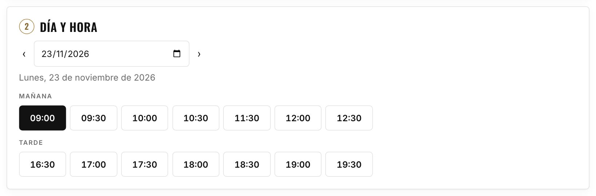
Figura 4.2 · Paso 2: día y hora. La hora elegida aparece en negro
Si un día la peluquería está cerrada (domingos, festivos, vacaciones), la app te lo indica y no muestra horas. Pasa al día siguiente con ›.
Paso 3 · ¿Una cita o varias?
Elige Solo esta cita para una reserva normal, o Citas periódicas para reservar varias de una vez (lo explicamos en el capítulo 5).
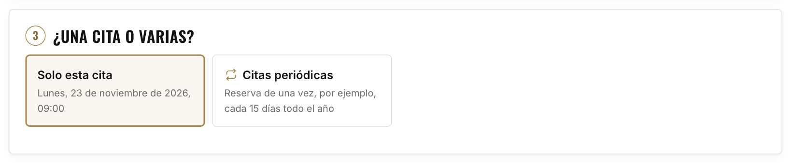
Figura 4.3 · Paso 3: una cita o varias
Paso 4 · Forma de pago
PayPal / tarjeta: pagas ahora, con tu cuenta de PayPal o con tarjeta. La cita queda pagada y recibes tu ticket al momento.
Pago en el local: no pagas nada ahora; pagas en la peluquería el día de la cita.
Si quieres, escribe algo en Comentarios (por ejemplo, «vengo con mi hijo» o «quiero degradado bajo»).
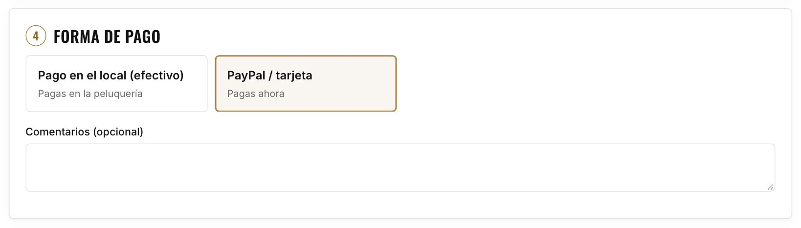
Figura 4.4 · Paso 4: forma de pago y comentarios
Confirmar
Abajo verás un resumen con el servicio, el día, la hora y el precio. Revísalo y pulsa:
Confirmar reserva si pagas en el local. La cita queda reservada al momento.
Continuar al pago si pagas con PayPal. Pasas a la pantalla de pago.
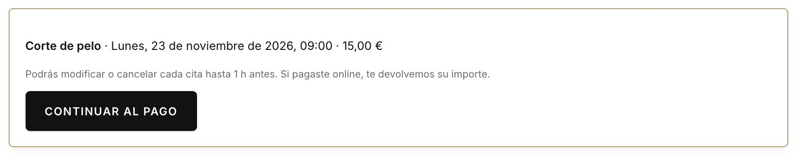
Figura 4.5 · Resumen antes de confirmar
Al terminar, recibirás un email de confirmación y la cita aparecerá en Mis citas.
Pagar con PayPal
En la pantalla Pago de la cita verás el total.
Pulsa Pagar con PayPal para pagar con tu cuenta, o el botón negro con el icono de tarjeta para pagar con tarjeta sin cuenta de PayPal.
Se abre la ventana de PayPal. Inicia sesión (o escribe los datos de tu tarjeta) y confirma el pago.
Al volver, la app confirma la cita, la marca como pagada y genera tu ticket de compra. Te lleva a Mis citas con el mensaje «Pago completado».
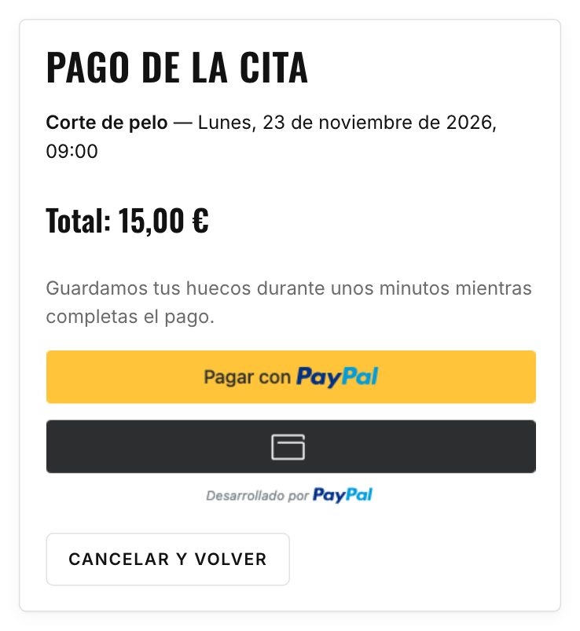
Figura 4.6 · Pantalla de pago con PayPal
Tienes unos minutos para pagar. Mientras pagas, la hora queda guardada para ti (15 minutos, salvo que la peluquería lo cambie). Si no terminas el pago a tiempo, la hora se libera y tendrás que reservar de nuevo. Si te arrepientes, pulsa Cancelar y volver.
En el caso muy raro de que otra persona coja la misma hora justo mientras pagas, la app te devuelve el importe completo automáticamente y te lo indica.
05Citas periódicas
Si vienes con regularidad, puedes reservar todas tus citas de una vez, por ejemplo cada 15 días durante todo el año, y olvidarte de pedir cita cada vez.
Haz los pasos 1 y 2 de la reserva normal: elige el servicio y el día y la hora de la primera cita.
En el paso 3 pulsa Citas periódicas.
Repetir cada: elige cada cuánto quieres venir: 1 semana, 2 semanas, 15 días, 3 semanas, 4 semanas, 30 días u Otro… para escribir cualquier número de días.
Hasta: elige Fecha (por defecto, un año después) o Número de citas (por ejemplo, 10 citas).
Revisa la lista de fechas que aparece debajo (ver más abajo).
Elige la forma de pago y pulsa Reservar N citas (o Continuar al pago si pagas todas juntas con PayPal).
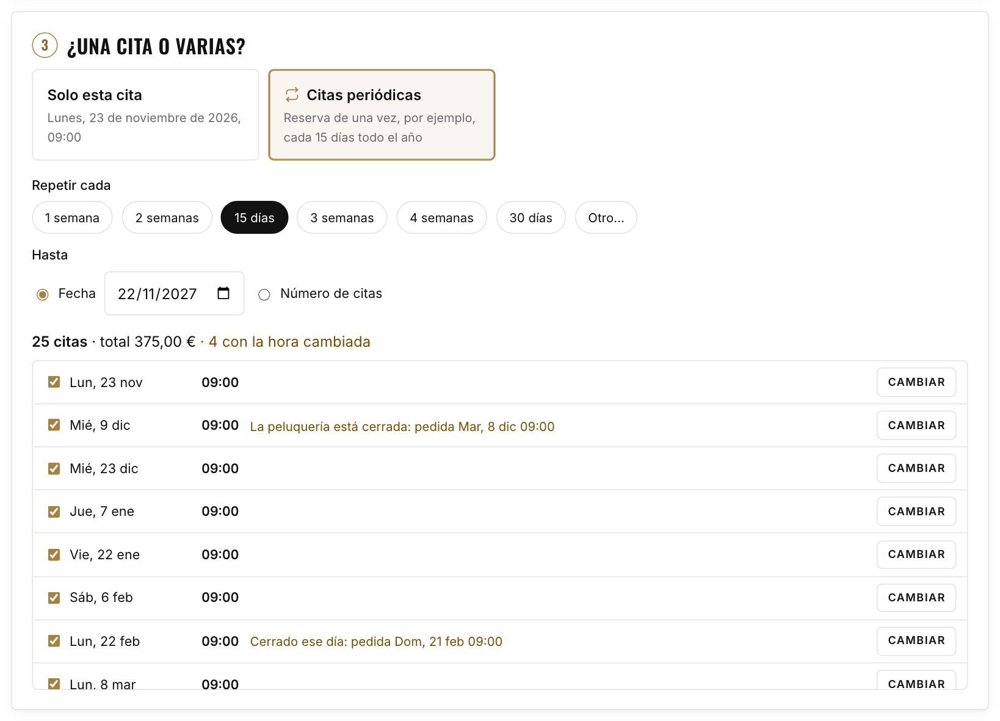
Figura 5.1 · Citas periódicas cada 15 días durante un año
Revisar las fechas
Antes de confirmar, la app comprueba una a una todas las fechas:
Si una fecha cae en un día que la peluquería cierra (un domingo, un festivo…) o la hora ya está ocupada, la app propone automáticamente el hueco libre más cercano y lo indica en color (por ejemplo, «La peluquería está cerrada: pedida Mar, 8 dic»).
Puedes quitar una fecha desmarcando su casilla, o cambiarla con el botón Cambiar.
Arriba de la lista verás cuántas citas son y el total a pagar.
Se reservan todas o ninguna. Si en el momento de confirmar alguna fecha deja de estar libre, la app no reserva ninguna y te avisa para que la cambies. Así nunca te quedas con una serie a medias.
Pagar una serie. Con PayPal pagas todas las citas en un único pago y recibes un único ticket con todas ellas. Si eliges pagar en el local, pagas cada cita el día que vengas. Más adelante puedes anular citas sueltas de la serie o todas a la vez.
06Mis citas
Aquí tienes todas tus citas: las próximas, con sus opciones, y el historial de las pasadas.
Pulsa Mis citas en la parte superior.
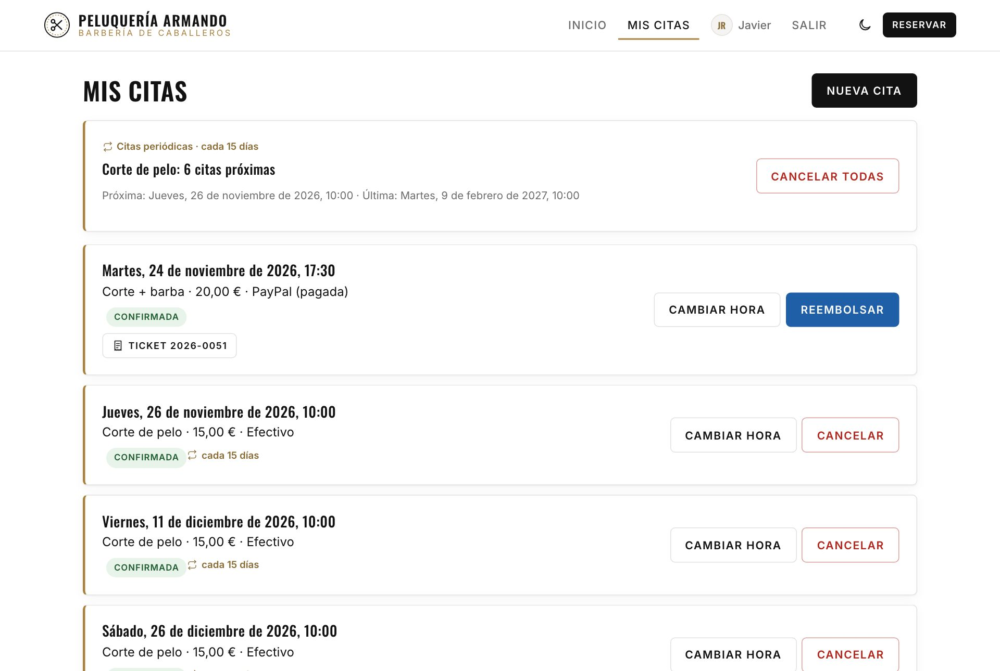
Figura 6.1 · Mis citas: una serie periódica, una cita pagada con PayPal y citas a pagar en el local
Próximas citas
Cada cita muestra el día y la hora, el servicio, el precio, la forma de pago y su estado (Confirmada o Pendiente de pago). Las citas que forman parte de una serie llevan el distintivo «cada 15 días» y, al principio de la lista, una tarjeta que resume la serie.
Según cómo esté pagada la cita, verás unos botones u otros:
La cita está…
Botones
Qué puedes hacer
Sin pagar (se paga en el local)
Cambiar horaCancelar
Cambiarla de hora o anularla.
Pagada con PayPal
Cambiar horaReembolsar
Cambiarla de hora, o anularla y recuperar el dinero.
Cobrada en la peluquería
Cambiar hora
Cambiarla de hora. Para anularla, habla con la peluquería.
Falta menos de 1 hora
—
Ya no se puede cambiar, anular ni reembolsar desde la app: llama a la peluquería.
Plazo de 1 hora. Puedes cambiar o anular tus citas hasta 1 hora antes de su comienzo. Con menos tiempo, la app muestra el teléfono de la peluquería para que llames. La peluquería sí puede hacer cambios en cualquier momento.
Cambiar la hora
Pulsa Cambiar hora en la cita.
Arriba verás la cita actual. Elige el nuevo día y la nueva hora, igual que al reservar.
Pulsa el botón inferior, que indica la nueva fecha (por ejemplo, Cambiar al lunes, 23…).
El pago se mantiene: si la cita estaba pagada, sigue pagada. Recibirás un email con la nueva hora.
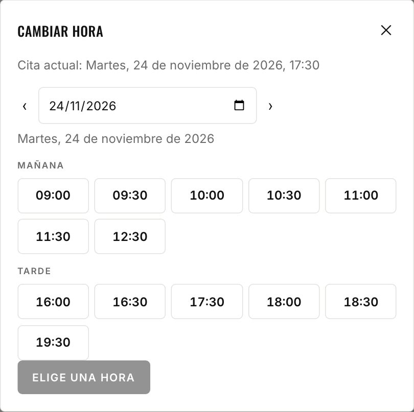
Figura 6.2 · Cambiar la hora de una cita
Cancelar una cita sin pagar
Pulsa Cancelar en la cita.
Confirma con Sí, cancelar cita.
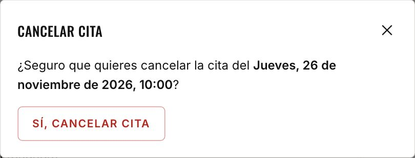
Figura 6.3 · Confirmación para cancelar
Reembolsar una cita pagada con PayPal
En las citas pagadas online, el botón Cancelar se sustituye por Reembolsar: al usarlo, la cita se anula y te devolvemos el dinero.
Pulsa Reembolsar.
La ventana te indica qué cita se anula, cuánto se devuelve y a qué cuenta de PayPal.
Pulsa Sí, reembolsar y anular.
El dinero vuelve a la misma cuenta de PayPal o tarjeta con la que pagaste. Puede tardar unos días en aparecer, según tu banco. Tu ticket se conserva y queda marcado como reembolsado.
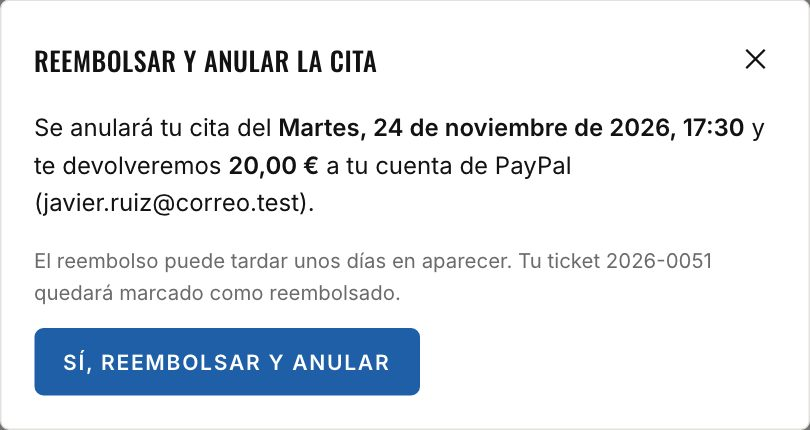
Figura 6.4 · Reembolsar y anular una cita pagada online
¿Y si pagué en la peluquería? Si la cita ya se cobró en el local y tiene ticket, no se puede anular desde la app, porque el dinero se devuelve en mano. Habla con la peluquería: te devolverán el importe y anularán la cita.
Cancelar una serie de citas periódicas
En la tarjeta de la serie (arriba del todo), pulsa Cancelar todas.
La ventana te dice cuántas citas se van a cancelar. Confirma con Sí, cancelar todas.
Se anulan todas las citas próximas de la serie. Las que estuvieran pagadas online se reembolsan una a una. Las que falten menos de 1 hora, o que ya estén cobradas en el local, no se anulan y la app te lo indica.
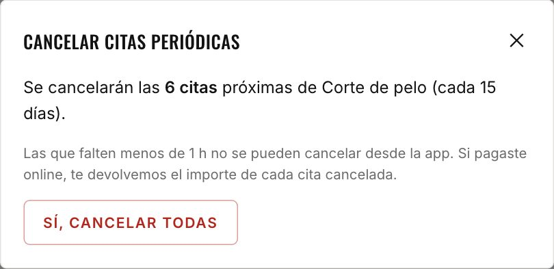
Figura 6.5 · Cancelar todas las citas de una serie
¿Solo quieres saltarte una fecha de la serie? Cancela esa cita suelta con su propio botón y el resto de la serie se mantiene.
Historial
Debajo de tus próximas citas está el Historial, con tus citas pasadas y anuladas: fecha, servicio, estado (Realizada, Cancelada, No se presentó…) y su ticket, si lo tiene.
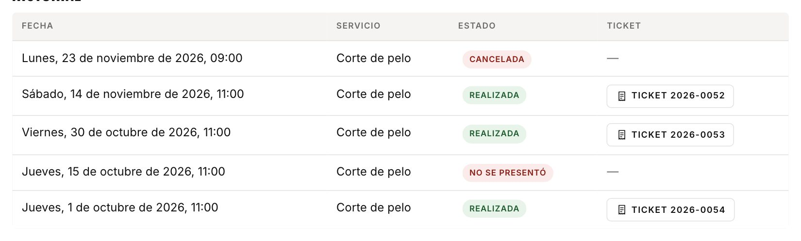
Figura 6.6 · Historial de citas
07Tickets de compra
Cada pago tiene su ticket de compra, con su número, la fecha, el desglose de IVA y la forma de pago. Puedes verlo en la app y descargarlo en PDF.
Cuándo se genera el ticket
Pago online: automáticamente al completar el pago con PayPal.
Pago en la peluquería: cuando la peluquería registra el cobro y genera el ticket.
Los tickets se numeran así: año-número, por ejemplo 2026-0051.
Ver y descargar un ticket
En Mis citas (o en el Historial), pulsa el botón ▤ Ticket 2026-… de la cita.
Se abre una ventana con el ticket: datos de la peluquería, número, fecha, tu nombre, forma de pago, concepto e importes.
Pulsa Descargar PDF para guardarlo. En el móvil se abre con el visor de PDF, desde donde puedes guardarlo o compartirlo.
Pulsa Cerrar para volver.
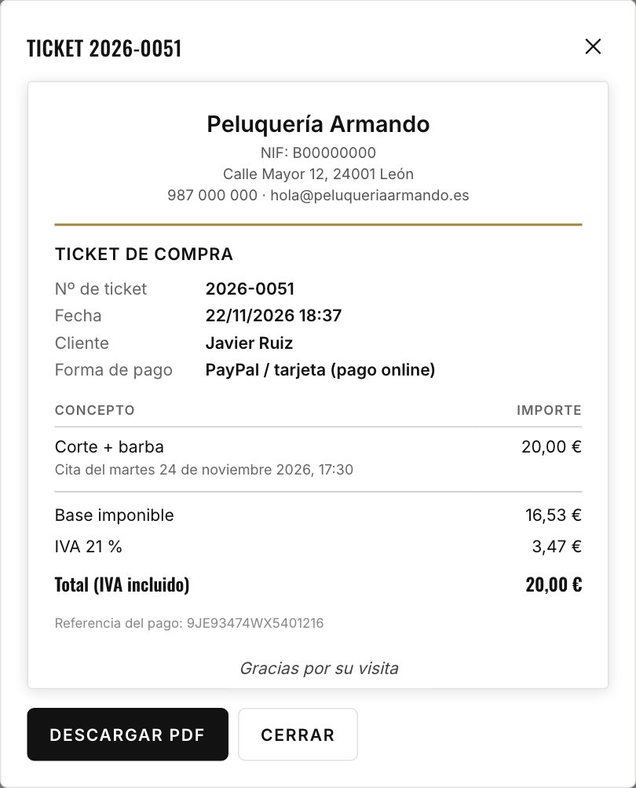
Figura 7.1 · Vista previa del ticket con el botón de descarga
Si una cita se reembolsa, su ticket no desaparece: se conserva con la línea Reembolsado y el botón indica «· reembolsado». Si después se vuelve a cobrar, la cita tendrá un ticket nuevo.
08Mi perfil
Pulsa tu nombre (junto a tu foto o iniciales) en la parte superior para abrir tu perfil.
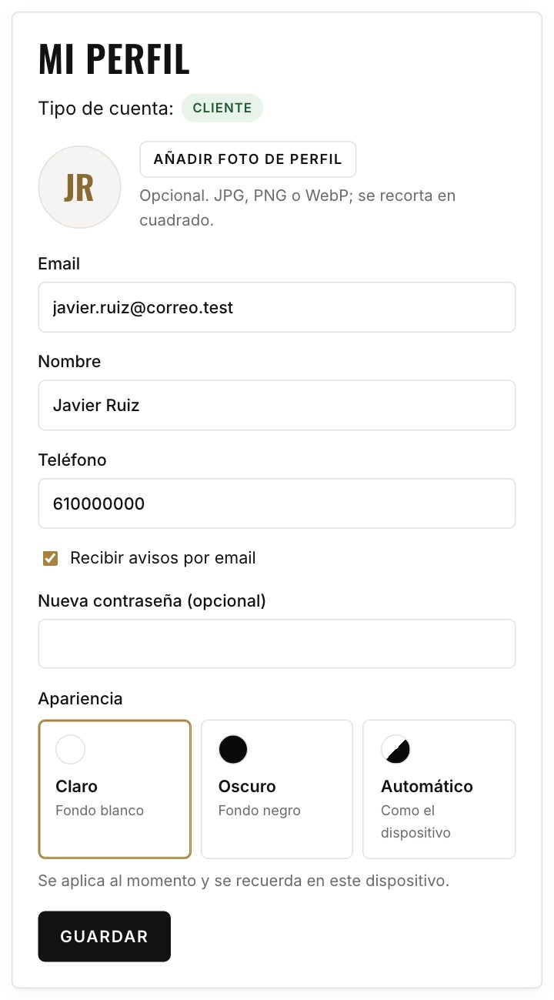
Figura 8.1 · Mi perfil
Datos y foto
Tipo de cuenta: verás Cliente.
Foto: pulsa Añadir foto de perfil (o Cambiar foto) para ponerla o cambiarla, y Quitar para borrarla.
Nombre y teléfono: corrígelos si han cambiado. El email no se puede cambiar desde aquí; si lo necesitas, pídeselo a la peluquería.
Contraseña
Escribe una contraseña nueva en Nueva contraseña (opcional). Si lo dejas vacío, se mantiene la actual.
Avisos por email
Marca o desmarca Recibir avisos por email. Los emails de tus propias citas (confirmación, cambios, anulaciones) se envían siempre; esta casilla solo afecta a los avisos generales de la peluquería.
Cuando termines, pulsa Guardar.
Tema claro u oscuro
En Apariencia elige Claro (fondo blanco), Oscuro (fondo negro) o Automático (igual que tu móvil u ordenador). Se aplica al momento y se recuerda en ese dispositivo. También puedes cambiarlo en cualquier pantalla con el botón ☾ / ☀ de la parte superior.
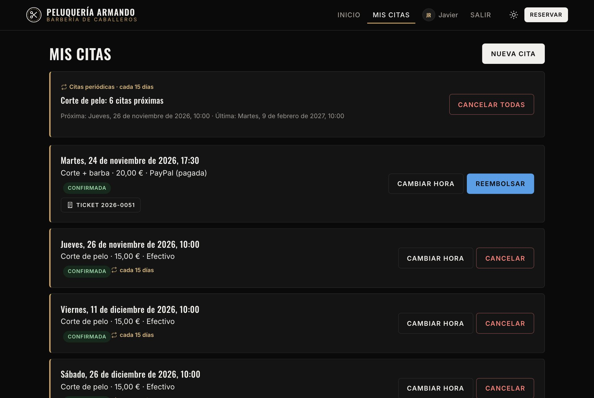
Figura 8.2 · Mis citas con el tema oscuro
09En el móvil
En el móvil la app funciona igual, adaptada a la pantalla pequeña.
Pulsa el icono ☰ (arriba a la derecha) para abrir el menú con Inicio, Mis citas, Reservar cita, tu perfil y Salir.
El botón ☾ / ☀ está siempre visible junto al menú.
Al añadir la foto de perfil puedes usar la cámara directamente.
Los tickets en PDF se abren con el visor del móvil para guardarlos o compartirlos.
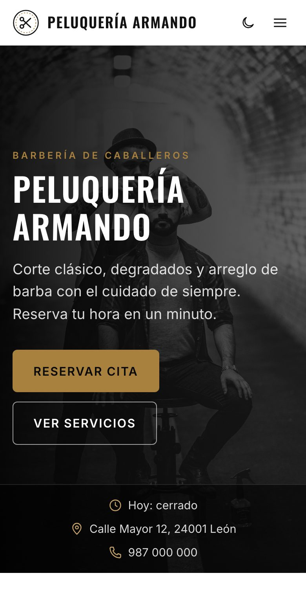
Figura 9.1 · Inicio
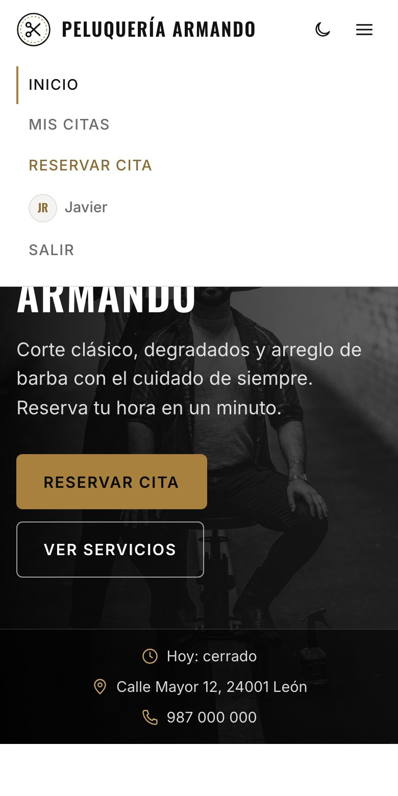
Figura 9.2 · Menú abierto
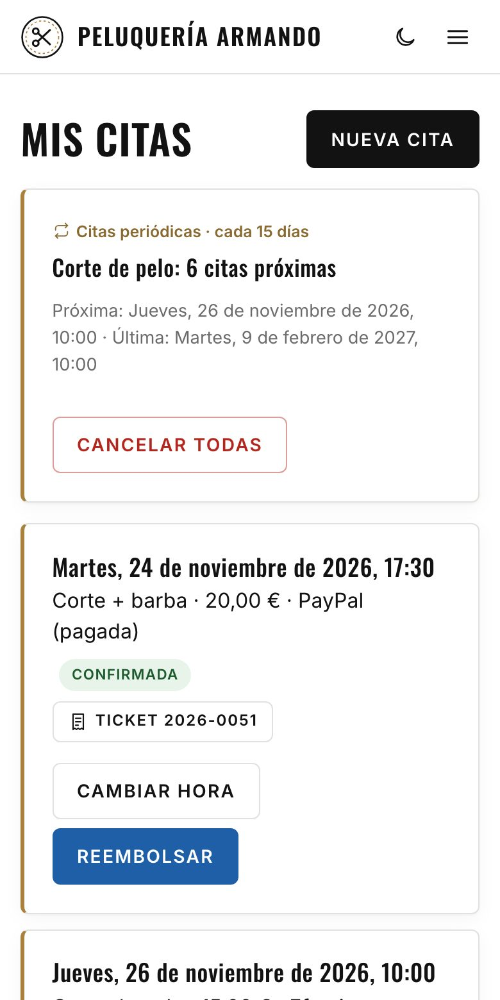
Figura 9.3 · Mis citas
10Preguntas frecuentes
¿Con cuánta antelación puedo reservar?
Hasta un año vista. Para el mismo día, verás las horas que aún estén libres.
¿Hasta cuándo puedo cambiar o anular una cita?
Hasta 1 hora antes de que empiece. Después, llama a la peluquería.
He pagado con PayPal y no puedo ir, ¿recupero el dinero?
Sí. Pulsa Reembolsar en la cita con al menos 1 hora de antelación: la cita se anula y el dinero vuelve a tu PayPal o tarjeta automáticamente.
Pagué en la peluquería y quiero anular la cita.
Habla con la peluquería: te devolverán el importe en mano y anularán la cita.
No me aparecen horas libres.
Puede que ese día la peluquería cierre o que esté completo. Prueba con el día siguiente con la flecha ›.
¿Me avisan de mis citas?
Recibes un email al reservar, al cambiar la hora y al anular. La peluquería también puede escribirte por WhatsApp al teléfono de tu cuenta.
¿Dónde está mi ticket?
En Mis citas, en la propia cita o en el Historial, con el botón ▤ Ticket. Si pagaste en el local y no lo ves, pídeselo a la peluquería.
¿Puedo reservar para otra persona?
Cada persona debe tener su propia cuenta. Si es un niño, puedes reservar el Corte infantil y escribirlo en Comentarios.
¿La app guarda mis datos de pago?
No. El pago se hace en PayPal; la app solo guarda que la cita está pagada y la referencia del pago, para poder devolvértelo si la anulas.
Peluquería Armando · Calle Mayor 12, 24001 León · 987 000 000 · hola@peluqueriaarmando.es
Los datos de contacto, nombres y fechas de las capturas son de ejemplo. Fotografías de la app: Thom Holmes, Hair Spies, Redd Francisco y Adam Sherez (Unsplash).